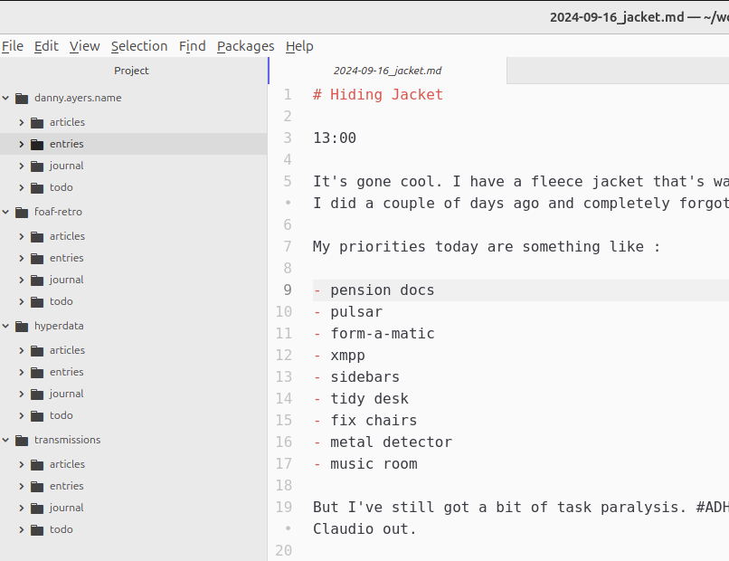

#
Hiding Jacket
13:00
It's gone cool. I have a fleece jacket that's warm, but I knew it needed washing. So I just searched high & low, only to find it in the washing machine. A wash I did a couple of days ago and completely forgot.
My priorities today are something like :
But I've still got a bit of task paralysis. #ADHD Strategy : either do something that will help productivity or something that will benefit someone else or take Claudio out.
The #Pulsar thing is productivity and should be a quicky.
Just thinking about Transmissions dev.
Pulsar Install
https://pulsar-edit.dev/docs/launch-manual/sections/core-hacking/#building-pulsar
danny@danny-desktop:~/github-danny/pulsar$ node -v
v20.11.0
danny@danny-desktop:~/github-danny/pulsar$ nvm use
Found '/home/danny/github-danny/pulsar/.nvmrc' with version <16>
Now using node v16.20.2 (npm v8.19.4)
danny@danny-desktop:~/github-danny/pulsar$ node -v
v16.20.2
New to me, corepack :
Trying :
corepack enable
git submodule init && git submodule update
yarn install
yarn build
yarn build:apm
yarn start
Some dependency warnings for install
Taking its time...might as well do printer alignment (I put in a new ink cartridge the other day before going out, alignment step had timed out before I got back).
Yay! Pulsar worked.
TODO review my earlier Pulsar tweaks, maybe integrate, save as hkms-desktop
TODO have a look at making an AppImage of hkms-desktop
What I want this for, in the first instance, is as a text editor for my #Postcraft instances, to free up this VSCode for, errm, code (I have been coding in Cursor, which is based on VSCode, but having this one separate to try other AI assistants will be useful).
I want the edity bits of each Postcraft instance in a common place. Named symlinks first :
mkdir ~/workspaces_hkms-desktop
cd ~/workspaces_hkms-desktop
mkdir postcrafts-raw
cd postcrafts-raw
ln -s ~/github-danny/postcraft/danny.ayers.name/content-raw ./danny.ayers.name
ln -s ~/github-danny/hyperdata/docs/postcraft/content-raw ./hyperdata
ln -s ~/github-danny/transmissions/docs/postcraft/content-raw ./transmissions
ln -s ~/github-danny/foaf-retro/docs/postcraft/content-raw ./foaf-retro
Hmm. Most of the others need their folder structure updating. I'll sort those out as I need them.
Ok, this will need tweaks, but that's basically done :

Font size changed 16->14.
cd ../transmissions/
./trans postcraft ../postcraft/danny.ayers.name
TODO bash script to run transmissions on postcrafts
Bum. I left a bug in there. Sort out later.
Git commit & push everything.
TODO better way of doing git commit/push on all these (instead of from inside VSCode)
Dogwalk time.
(use usr/local/bin...) Alternatively, if you want the scripts to be available only for your user:
Create a bin directory in your home folder if it doesn't exist: mkdir -p ~/bin
Add this line to your .bashrc file: export PATH="$HOME/bin:$PATH"
Reload your .bashrc: source ~/.bashrc
Place your scripts in ~/bin
I need a hyperdata-static-2024 repo.
cd ~/github-danny/pulsar
repopack --verbose -c /home/danny/github-danny/transmissions/repopack.config.json
That got stuck.
Hmm. npm update repopack stuck too. Network glitching? Yup, connection had dropped.
TODO minimalist hardcoded runner script for Transmissions to help testing & AI assistant generation
Something like :
const servicesConfigA = {...}
const servicesConfigB = {...}
var message = {...}
// need to add
const A = new ServiceA(servicesConfigA, configType="json")
const B = new ServiceB(servicesConfigB, configType="json")
message = A.execute(message)
message = B.execute(message)
console.log(JSON.stringify(message))
I've made another repopack config, so :
cd ~/github-danny/pulsar
repopack --verbose -c ./repopack.config.json
Hmm. 9x too big for Claude.
Time to organise my scripts. Might as well put them on GitHub and on hyperdata.it
Added to .bashrc :
export PATH="$HOME/github-danny/hyperdata.it/scripts:$PATH"
then :
source ~/.bashrc
I did a repopack of the src and docs dirs of Pulsar. Docs was 58% of Claude project space, so I'll leave that there for now.
The Transmissions bug was an easy fix.
19:38 - food time.
Hiding Jacket
2024-09-17
#
HipHop
Listening to oldskool hiphop, trying to restrain my head from hopping around.
Nearly forgot, I was wondering about dynamically loading #Transmission services from locations unkown before runtime. Claude gave me some suggestions.
TODO copy into Transmissions notes
13:33 and I still not really awake yet. Body a bit tired, I walked 14,163 steps yesterday! But I've 1 bottle of Peroni, 3 cans of Radler 2% shandy and some very poor ginger beer to lubricate.
Ok, quick stab at the markmap bits.
It's not obvious from the docs how to use the libs. See if Claude can help.
In ~/github-other$ :
git clone https://github.com/markmap/markmap.git
cd markmap
repopack --verbose -c /home/danny/github-danny/transmissions/repopack.config.json
Project created on Claude. System prompt & repopack added.
In ~github-danny/transmissions
npm install markmap-lib
npm install markmap-render
npm install markmap-view
npm install markmap-toolbar
Claudes first pass in :
~/github-danny/transmissions/raw-src/markmap/01.js
Wow, Claude got it right first time!
import { Transformer } from "markmap-lib";
import { fillTemplate } from "markmap-render";
const input = `# A markdown string
## another
* bullet1
* bullet2`;
// Step 1: Transform markdown to markmap data
const transformer = new Transformer();
const A = transformer.transform(input);
// Step 2: Get assets (CSS and JS) needed for rendering
const B = transformer.getAssets();
// Step 3: Generate HTML with embedded SVG
const C = fillTemplate(A.root, B);
// Now C contains the final HTML with embedded SVG
// console.log(A)
//console.log(B)
console.log(C);
The JSON structure I wanted to look at, A is :
{
content: '# A markdown string\n## another\n\n* bullet1\n* bullet2',
features: {},
contentLineOffset: 0,
root: {
content: 'A markdown string',
children: [ [Object] ],
payload: { lines: '0,1' }
}
}
Hmm. Not quite the intermediate representation I was hoping for, but presumably there's stuff in the [Object].
B is :
{
styles: [
{ type: 'stylesheet', data: [Object] },
{ type: 'stylesheet', data: [Object] }
],
scripts: [
{ type: 'iife', data: [Object] },
{ type: 'script', data: [Object] }
]
}
C is HTML with embedded SVG.
Claude also gave me code for getting just the SVG: In node it needs :
npm install jsdom
Code is in raw-src/markmap/02.js
Claude messed up trying to use lots of DOM. I'll leave SVG-alone alone for now.
I asked Claude about looking at the children object. He gave me :
function expandNode(node, depth = 0) {
const indent = " ".repeat(depth);
console.log(`${indent}content: ${JSON.stringify(node.content)}`);
if (node.payload) {
console.log(`${indent}payload: ${JSON.stringify(node.payload)}`);
}
if (node.children && node.children.length > 0) {
console.log(`${indent}children:`);
node.children.forEach((child) => expandNode(child, depth + 1));
}
}
# A markdown string
## another
* bullet1
* bullet2
This gave me :
content: "A markdown string"
payload: {"lines":"0,1"}
children:
content: "another"
payload: {"lines":"1,2"}
children:
content: "bullet1"
payload: {"lines":"3,4"}
content: "bullet2"
payload: {"lines":"4,5"}
TODO incorporate markmap-toolbar
Dogwalk time.
HipHop
2024-09-17
#
Walking Hat
The bedroom was chilly last night so I wore a beany hat in bed. I was wearing it when I woke up. Finally found it on the bedside table on the other side of the bed. How it got there is a mystery. I didn't go over there, it's not the kind of trick Claudio plays. Which leaves the possibility of rodents...
So it's Saturday, #ELFQuake day. So I must do at least an hour on that.
The dependency tree for that includes a lot of tasks that help elsewhere, so
17:15 and I still haven't got to code...
Using bit from Markmap :
TODO services/text/MarkdownToJSON.js, services/viz/JSONToSVGTree.js
The latter using markmap-lib to have a look at the output shape, because I now reckon for simplicity & reuse, #form-a-matic should have an intermediate JS object representation (so RDF->JSON...JSON->HTML), initially a simple tree.
First, dump some idea bits.
TODO transmissions/services/ingesters/ToDoText.js
Idea Bits
Unidentified Reality Issues
Nature Nurture
TODO make #Transmissions Turing Complete
This is currently a YAGNI, but I reckon worth doing before release because it make anything possible and implementation will need changes in the core engine of Transmissions.
Needs :
- Conditional branching
- Looping or recursion
https://en.wikipedia.org/wiki/Structured_program_theorem
TODO write Wireless World articles on Radio Nature, ELFQuake
https://www.electronicsworld.co.uk/magazines/
https://en.wikipedia.org/wiki/Electronics_World
TODO write 'ADHD for Computer Scientists'
For r/tokipona
The English idiom "to kill two birds with one stone" expresses a very useful concept (to achieve two things with a single action) in a horrible way. I was pleased to find that the Italian equivalent "prendere due piccioni con una fava" is less violent - to catch two pigeons with one bean. There are other variants around Europe . My geo is terrible, no idea which country has "roast two pieces meat on one fire", but again that's a bit less nasty.
I'd like a pleasant English version and to find that, getting it to work in the language of good seems a good approach. So how would you express this in toki pona?
For twitter:
First they came for the Venezualians, and I did not speak out, because I was not a Venezualian.
Then they came for the Haitians, and I did not speak out, because I was not a Haitian.
...
Walking Hat
2024-09-17
#
A Swarm of Ducks
Postcrafts
danny.ayers.name
hyperdata.it
elfquake.org
strandz.it
foaf-retro
postcraft
A Swarm of Ducks
2024-09-17
#
Download to my server first? But how, given whatever auth Google is using..? Wireshark to read actual messages?
Claude suggested download to Google Drive first, then other more interesting suggestions, including using Selenium or Puppeteer. I think I played with Selenium a while back, the mock-browser setup would be useful elsewhere for me. To consider.
Distraction:
https://console.cloud.google.com/welcome?pli=1&project=mozzanella-01
Start your free trial with $300 in credit. Don't worry – you won't be charged if you run out of credit. Learn more
Asked Grok:
I need to download my email archives from gmail but I have a very unreliable internet connection. For downloading from simple URLs I would use wget -c and resume if the line dropped. When I try downloading the gmail archive from a browser is does have a kind of resume, but doesn't appear to restart where it left off a lot of the time. It also has quite a complicated URL and it looks like there is some kind of auth involved too. How can I do a reliable, resumable, efficient download?
Show more
I understand your concern. Downloading a large email archive from Gmail can be challenging, especially with an unreliable internet connection. Here's a step-by-step guide to help you download your Gmail archives reliably, resumably, and efficiently:
Method 1: Using wget with Gmail's API
Gmail provides an API that allows you to download your email archives programmatically. You'll need to:
Enable the Gmail API for your account:
Go to the Google Cloud Console (https://console.cloud.google.com/) and create a new project.
Navigate to APIs & Services > Library and search for "Gmail API".
Click on the result, then click on the "Enable" button.
Create credentials for your project (OAuth client ID).
Install the curl and jq command-line tools:
curl is used to send HTTP requests, and jq is used to parse JSON responses.
Use the following command to download your email archives:
curl -X GET
https://www.googleapis.com/gmail/v1/users/me/messages?labelIds=INBOX&maxResults=1000
-H 'Authorization: Bearer YOUR_ACCESS_TOKEN'
-H 'Content-Type: application/json'
-o messages.json
Replace YOUR_ACCESS_TOKEN with the access token obtained from the Google Cloud Console.
This command downloads the first 1000 messages in your inbox. You can adjust the maxResults parameter to change the batch size.
To resume the download, you can use the --continue option with curl:
curl -X GET
https://www.googleapis.com/gmail/v1/users/me/messages?labelIds=INBOX&maxResults=1000&startMessageId=MESSAGE_ID
-H 'Authorization: Bearer YOUR_ACCESS_TOKEN'
-H 'Content-Type: application/json'
-o messages.json
--continue
Replace MESSAGE_ID with the ID of the last message downloaded.
Method 2: Using wget with Gmail's IMAP
Gmail provides an IMAP (Internet Message Access Protocol) interface that allows you to access your email archives. You'll need to:
Enable IMAP access for your Gmail account:
Go to your Gmail settings (gear icon) > Forwarding and POP/IMAP > Enable IMAP.
Install the wget command-line tool.
Use the following command to download your email archives:
wget -r -l 1 -A imap -P /path/to/download/folder imap://imap.gmail.com
This command downloads all emails from your inbox, using the IMAP protocol. The -r option tells wget to follow links, -l 1 sets the maximum recursion depth to 1, -A imap specifies the file name pattern, and -P sets the download directory.
To resume the download, you can use the --continue option with wget:
wget -r -l 1 -A imap -P /path/to/download/folder --continue imap://imap.gmail.com
Tips and Variations
To download specific labels or folders, modify the labelIds or folder parameter in the API request or IMAP URL.
To download attachments, use the --recursive option with wget and specify the attachment file name pattern.
To download emails in a specific format (e.g., MBOX, EML), use a tool like imap-sync or mbox2eml.
If you encounter issues with authentication or connection timeouts, try using a VPN or a more reliable internet connection.
Remember to respect Gmail's terms of service and usage limits when downloading your email archives.
Welcome back! We're glad you’re here and as always, we want to help. If you're new to Groq, here are a few suggested topics you might be interested in learning about:
What is an LPU? Read our latest whitepaper outlining the four core design principles of an LPU and how it differs from a GPU
Learn about the openly available models Groq is running, including the recent addition of Llama 3.1 by Meta
Get inspiration from the innovative AI applications Powered by Groq, featured on our Showcase
Ready to start building? Get your free API key at GroqCloud™ Developer Console and join our community of developers on Discord.
To experience the instant intelligence of GroqChat, create an account or sign in
Danny Ayers
Danny Ayers
Google Takedown
2024-09-17